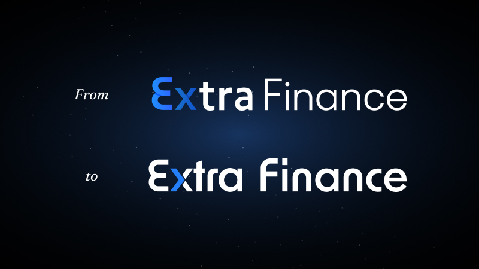
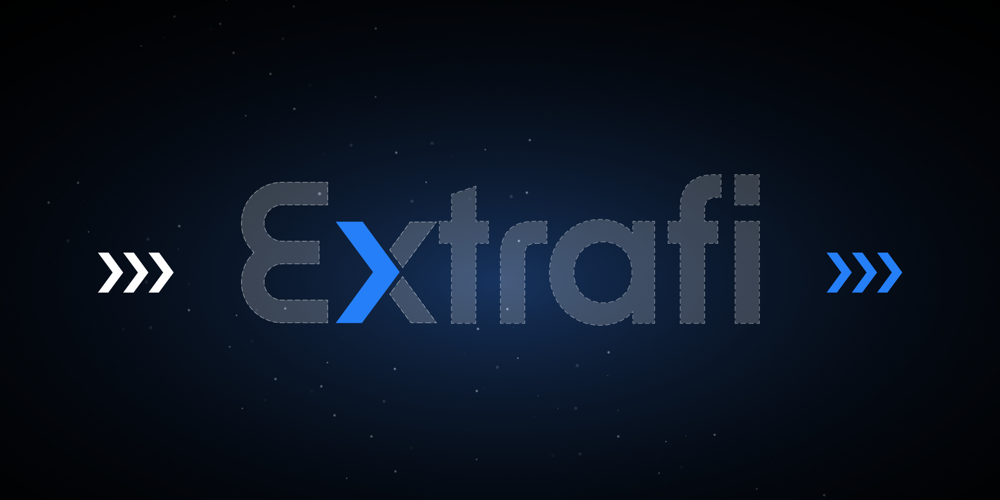
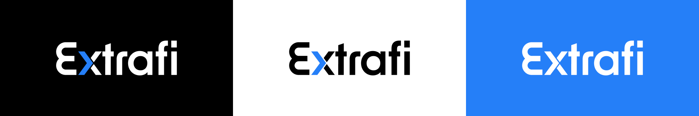

One visual system for a multi-market finance product.
Extrafi had entered a high-growth stage, but its brand and product surfaces needed a clearer structure for derivatives and financing scenarios.
Extrafi / V2.0 Visual Upgrade
Extrafi is a derivatives and financing platform that connects multiple markets into one product experience. At Extra Labs, I led the V2.0 visual upgrade, covering the project logo, product-line visual planning, VI and UI style renewal, and the official website redesign.
01 - Project Overview
Extrafi had entered a high-growth stage, but its brand and product surfaces needed a clearer structure for derivatives and financing scenarios.
I owned the main visual direction, from logo and product-line visuals to the VI/UI renewal and official website redesign.
The upgrade needed to make Extrafi feel more mature, focused, and ready for a broader market, with logo, visuals, and interface style working as one connected system.
The old logo mixed inconsistent type, lacked a deeper idea, and used shadows to separate forms, making it feel less clean. I redesigned a custom logotype, turned the X into a right-facing arrow for Extra Fast, and flattened the mark with a focused blue accent so it carried clearer meaning and more room to expand.



Design system direction
The product surface uses a bright app shell, white data panels, compact chips, and a strong blue action layer so leveraged farming, lending, staking, and bridge flows can stay dense without feeling heavy.
02 - Brand Operations
Promotional materials are a crucial part of brand design, especially for a product that needs to feel both technical and trustworthy. I used deep navy backgrounds and star-field elements across the operation assets to give Extrafi a calmer, more stable sense of technology.
The visual language also kept moving with new interface and brand trends. I introduced a liquid-glass turbine as a new primary motif: its form suggests speed and advanced technology, while the dense blades echo Extrafi's role in bringing different financial products into one connected platform.
Brand operation materials


03 - Website Redesign
The official website upgrade translated the V2.0 visual system into a clearer public-facing experience. It needed to communicate what Extrafi is, why a multi-market derivatives and financing platform matters, and how the product had grown.
04 - My Role & Scope
Redesigned the Extrafi logotype around the X arrow concept, making the mark flatter, cleaner, and easier to extend.
IdentityDefined the Extra blue palette, app surfaces, chips, and state colors for dense derivatives and financing flows.
SystemBuilt the navy, star-field, and turbine-led material direction so campaign visuals could carry the same technology and stability.
OperationsTranslated the V2.0 identity into a public-facing website story with clearer positioning, motion, and product mockups.
WebsiteKept the logo, UI, operation materials, and website visuals speaking one language instead of separate design surfaces.
AlignmentRefined hierarchy, responsive behavior, asset usage, and implementation-ready details across the final experience.
Delivery05 - Outcome & Reflection
The work gave Extrafi a more mature identity for a high-growth stage: a sharper logo foundation, a blue-led interface palette, scalable brand-operation visuals, and a website that explained the product with stronger confidence. During the same period, Extrafi reached a leading ecosystem position and surpassed 200 million USD in peak TVL.
The X arrow became more than a mark detail. It gave the upgrade a clear idea around speed, direction, and expansion.
The Extra blue palette, white UI panels, and controlled state colors helped complex product information stay readable.
Following new visual directions, from liquid-glass materials to richer motion, helped the brand stay current without losing its core sense of speed and trust.
AI robotics / Web design